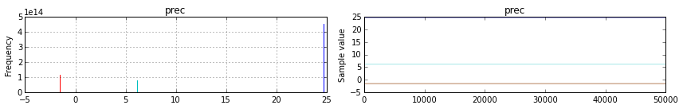

In [3]:
pm.Wishart('jo')
---------------------------------------------------------------------------
TypeError Traceback (most recent call last)
<ipython-input-3-27f143729e68> in <module>()
----> 1 pm.Wishart('jo')
/home/wiecki/working/projects/pymc/pymc3/distributions/distribution.py in __new__(cls, name, *args, **kwargs)
12 model = Model.get_context()
13 except TypeError:
---> 14 raise TypeError("No model on context stack, which is needed to use the Normal('x', 0,1) syntax. Add a 'with model:' block")
15
16 if isinstance(name, str):
TypeError: No model on context stack, which is needed to use the Normal('x', 0,1) syntax. Add a 'with model:' block
In [1]:
import numpy as np
import pymc3 as pm
import scipy.optimize as opt
prec_prior = np.array([[ 25.3968254, -1.58730159],
[ -1.58730159, 6.34920635]])
with pm.Model() as model:
prec = pm.Wishart('prec', 100., prec_prior / 100., shape=(2, 2))
start = pm.find_MAP(fmin=opt.fmin_powell)
#start = {'prec': prec_prior}
step = pm.Metropolis()
trace = pm.sample(50000, step, start)
ERROR (theano.sandbox.cuda): nvcc compiler not found on $PATH. Check your nvcc installation and try again.
ERROR:theano.sandbox.cuda:nvcc compiler not found on $PATH. Check your nvcc installation and try again.
Couldn't import dot_parser, loading of dot files will not be possible.
[-----------------100%-----------------] 50000 of 50000 complete in 13.6 sec
/home/wiecki/working/projects/pymc/pymc3/distributions/multivariate.py:165: UserWarning: The Wishart distribution can currently not be used for MCMC sampling. The probability of sampling a symmetric matrix is basically zero. Instead, please use the LKJCorr prior. For more information on the issues surrounding the Wishart see here: https://github.com/pymc-devs/pymc3/issues/538.
warnings.warn('The Wishart distribution can currently not be used for MCMC sampling. The probability of sampling a symmetric matrix is basically zero. Instead, please use the LKJCorr prior. For more information on the issues surrounding the Wishart see here: https://github.com/pymc-devs/pymc3/issues/538.', UserWarning)
In [3]:
%matplotlib inline
In [12]:
np.linalg.eigh(trace[100]['prec'])
Out[12]:
(array([ 1.72380714, 30.72256455]), array([[ 0.25090562, -0.96801155],
[-0.96801155, -0.25090562]]))
In [15]:
import scipy as sp
In [20]:
pm.distributions.Wishart.dist(100., prec_prior / 100., shape=(2, 2)).logp(trace[500]['prec']).eval()
Out[20]:
array(94.90002431902366)
In [6]:
trace[51]
Out[6]:
{'prec': array([[ 25.3968254 , -1.58730159],
[ -1.58730159, 6.34920635]])}
In [7]:
trace[100]
Out[7]:
{'prec': array([[ 25.3968254 , -1.58730159],
[ -1.58730159, 6.34920635]])}
In [11]:
import theano
In [13]:
theano.tensor.tril
Out[13]:
<function theano.tensor.basic.tril>
In [9]:
t = trace[50:]
pm.traceplot(t);

In [3]:
trace[:20]['prec']
Out[3]:
array([[[ 2.71705254e+001, -1.45994891e+307],
[ 1.06845642e+001, 1.03801233e+001]],
[[ 2.81707589e+001, -1.45994891e+307],
[ 1.01541724e+001, 9.96350107e+000]],
[[ 2.79628694e+001, -1.45994891e+307],
[ 1.18000649e+001, 1.03071813e+001]],
[[ 2.66869908e+001, -1.45994891e+307],
[ 1.14491176e+001, 1.11287249e+001]],
[[ 2.56072884e+001, -1.45994891e+307],
[ 1.12182284e+001, 1.11621632e+001]],
[[ 2.49051696e+001, -1.45994891e+307],
[ 1.04482072e+001, 9.51357450e+000]],
[[ 2.61888430e+001, -1.45994891e+307],
[ 1.10191506e+001, 9.74135368e+000]],
[[ 2.56913406e+001, -1.45994891e+307],
[ 1.02982690e+001, 1.06540367e+001]],
[[ 2.40567322e+001, -1.45994891e+307],
[ 1.00699148e+001, 1.19104536e+001]],
[[ 2.28341812e+001, -1.45994891e+307],
[ 1.02317901e+001, 1.26194154e+001]],
[[ 2.24045998e+001, -1.45994891e+307],
[ 1.02385647e+001, 1.29636247e+001]],
[[ 2.08101153e+001, -1.45994891e+307],
[ 9.96276760e+000, 1.46764792e+001]],
[[ 2.01623918e+001, -1.45994891e+307],
[ 9.94025085e+000, 1.28206786e+001]],
[[ 1.99120119e+001, -1.45994891e+307],
[ 1.16385034e+001, 1.27706756e+001]],
[[ 2.07880535e+001, -1.45994891e+307],
[ 1.01067828e+001, 1.21660105e+001]],
[[ 1.99925497e+001, -1.45994891e+307],
[ 9.56031931e+000, 1.42149597e+001]],
[[ 1.94286924e+001, -1.45994891e+307],
[ 9.52546270e+000, 1.30627567e+001]],
[[ 1.86449246e+001, -1.45994891e+307],
[ 8.76484408e+000, 1.33631109e+001]],
[[ 1.89847734e+001, -1.45994891e+307],
[ 8.00341787e+000, 1.29455565e+001]],
[[ 1.82025743e+001, -1.45994891e+307],
[ 6.21034606e+000, 1.31743166e+001]]])